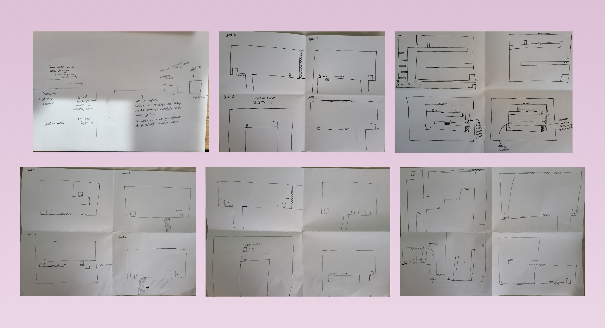
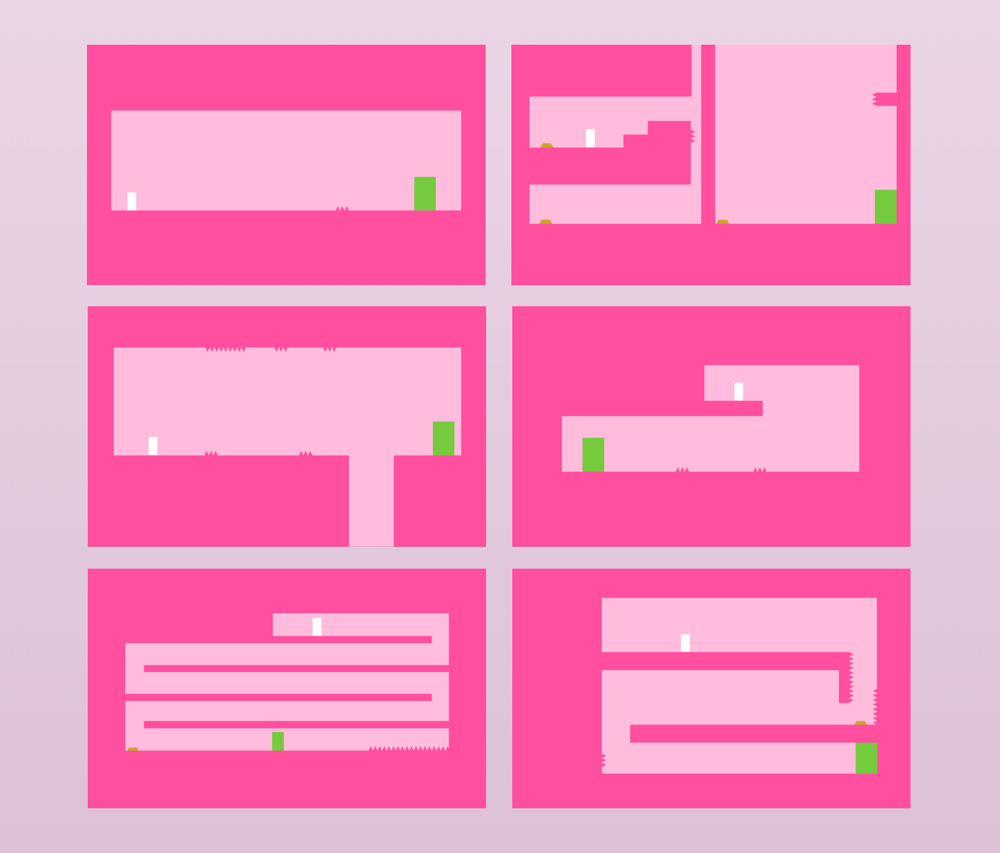
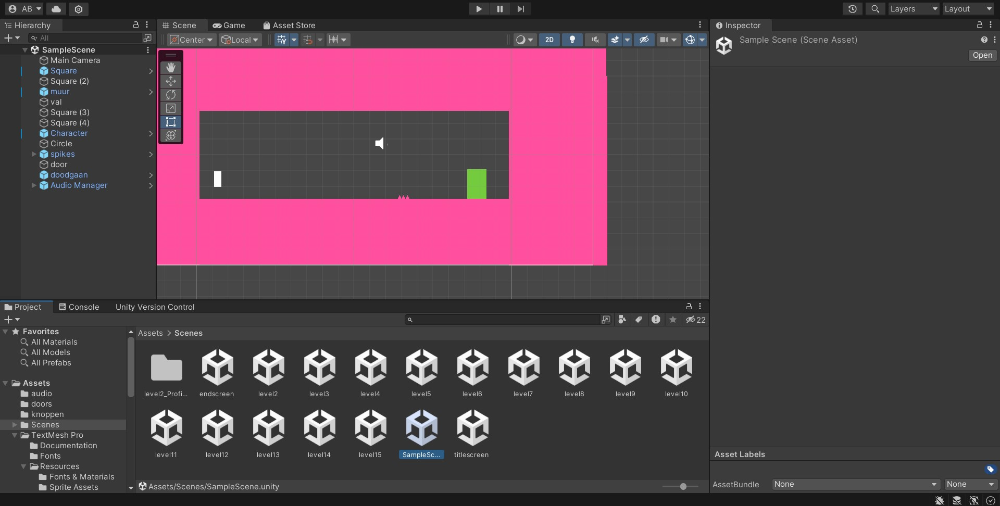
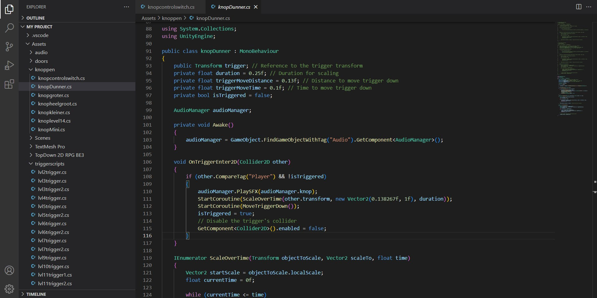

Periode
Februari - april 2024
Skills
- ● Unity
- ● C#
- ● Level & challenge design
- ● 2D platform mechanics
- ● UX/UI design
Opdracht & beschrijving
Voor de Bootcamp van de minor Applied Game Design kreeg ik de opdracht om een 2D platform game te ontwerpen en te bouwen in Unity. De Bootcamp bood in vijf weken een introductie in techniek, assets, en een theoretische en praktische basis voor het ontwerpen van digitale games. Ik heb ervoor gekozen om een troll game te maken met veel onverwachte gebeurtenissen door middel van onzichtbare triggers. De game bestaat uit 15 korte levels.
Aanpak
Als eerst heb ik andere games onderzocht en geanalyseerd. Vervolgens was ik gaan brainstormen voor ideeën voor mijn eigen game. Na het divergeren ben ik gaan convergeren en heb ik keuzes gemaakt. Hierna heb ik concreet het concept opgeschreven en ben ik gaan schetsen. Nadat ik de levels had uitgeschetst, ben ik gaan bouwen in unity. De levels heb ik meerdere keren getest, daar conclusies uit getrokken en geïtereerd. Uiteindelijk ben ik tot het eindproduct gekomen en heb ik de game op itch gepubliceerd.
Level design
Nadat ik het concept concreet had opgeschreven, was ik begonnen met alle levels uitdenken en schetsen. De game bestaat uit 15 korte levels. Elk level heeft weer een andere verassing voor de speler. De spelers worden per level steeds iets meer uitgedaagd, hier is goed over nagedacht.
Visuele stijl
De visuele stijl die ik wilde laten uitstralen was simpel en schattig. Dit heb ik gedaan door een simpel en abstract roze thema aan te houden.
Development
De 2D platform game is developed in Unity. Hierbij heb ik gecodeerd met C#. Ik heb heel veel geleerd aangezien dit mijn eerste Unity project was. Ik heb o.a. geëxperimenteerd met verschillende mechanics, triggers en het bouwen van levels. Het was zeker een uitdaging, maar ik ben trots op wat ik in vijf weken heb neergezet!
 